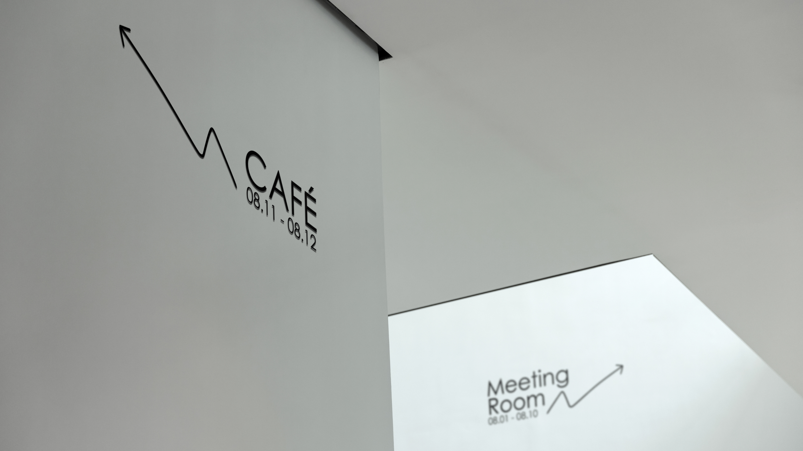

Way Finding

"Navigate effortlessly, every step a discovery."
"Welcome to our cutting-edge wayfinding system, where innovation meets accessibility. Our design philosophy blends dynamic creativity with modern clarity, creating an intuitive navigation experience for all users. At the heart of our system lies a unique fusion of handwritten lines and sleek sans-serif fonts. The handwritten lines infuse a personal touch, evoking warmth and individuality, while the sans-serif fonts convey professionalism and reliability. This harmonious blend strikes a balance between creativity and practicality, ensuring that our system is not only visually engaging but also user-friendly and approachable."
"With our wayfinding system, navigating complex environments becomes a seamless journey. Whether you're exploring urban landscapes or navigating corporate campuses, our intuitive design ensures that every step is guided with ease and precision."
"Welcome to our cutting-edge wayfinding system, where innovation meets accessibility. Our design philosophy blends dynamic creativity with modern clarity, creating an intuitive navigation experience for all users. At the heart of our system lies a unique fusion of handwritten lines and sleek sans-serif fonts. The handwritten lines infuse a personal touch, evoking warmth and individuality, while the sans-serif fonts convey professionalism and reliability. This harmonious blend strikes a balance between creativity and practicality, ensuring that our system is not only visually engaging but also user-friendly and approachable."
"With our wayfinding system, navigating complex environments becomes a seamless journey. Whether you're exploring urban landscapes or navigating corporate campuses, our intuitive design ensures that every step is guided with ease and precision."

At its core, our approach combines handwritten aesthetics with modern sans-serif typography.


This fusion of analog and digital creates a sense of warmth and
authenticity while maintaining the efficiency and reliability of modern
technology.

Brand Name:
Category:
Designer:
"Way Finding"
"Spatial Design"
"Su Ziyue"
Feel free to explore my work and get in touch if you'd like to collaborate or discuss potential design opportunities. Let's bring your digital ideas to life together!